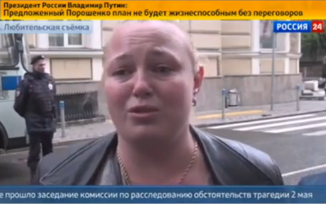

Известная «гастролерша» Ципко выступила в роли пострадавшей в одесской трагедии
Телеканал «Россия 24» 21 июня показал в эфире программы «Вести» сюжет о расследовании событий в Одессе 2 мая, во время которых погибли более сорока человек.
В этом сюжете в очередной раз появилась уже известная «гастролерша» Мария Ципко, которая ранее объявлялась в разных украинских городах в качестве местной жительницы, пострадавшей или свидетельницы «зверств» украинских военных.11 мая она даже оказалась «координатором референдума» о самоопределении ДНР и ЛНР в Москве.
В свежем сюжете «Вестей» голос за кадром говорит: «Свидетелям и родным погибших стали угрожать.Это видео снято у посольства Украины в Москве, где собрались вынуждено покинувшие активисты Куликового поля.На родину теперь опасно возвращаться».
После этого «активистка Куликового поля» Ципко рассказала каналу о преследованиях, которые глава МВД Одессы устроил против пророссийских активистов.
В свою очередь ее коллега со слезами заявила: «Наших очень много полегло активистов.А что, у нас палки, а у них — автоматы».

Заявление женщины о том, что во время событий в Одессе у пророссийских активистов были палки, а у их противников — автоматы, также неправдиво.Как уже неоднократно писал StopFake (раз, два), основной причиной столкновения на Куликовом поле и трагедии в Доме профсоюзов стало предшествующее этим событиям противостояние на улицах города, во время которого вооруженные пророссийские активисты напали на проукраинских, а также на футбольных фанатов, которые организовали шествие перед матчем.Во время этого столкновения были убиты несколько проукраинских активистов, вследтвие чего и было совершено нападение на Куликово поле и Дом профсоюзов.
Posted On: 2014-06-24T21:00:00
Content Date: 2014-06-24
Download Date: 2021-07-16
Document ID: L0C04FDLA